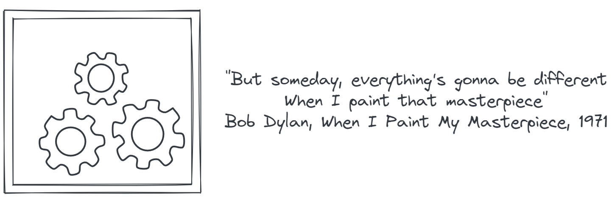

Is Software Development Art?
2023-12-02
Sander Mak’s talk “The Art of Software development” at JFall conference and discussions with my colleagues left me puzzled somehow. Is software development more art than engineering? What is it that I am doing anyway?
Around that time I read an article about Jens Haaning, a Danish conceptual artist who was commissioned by museum to recreate two earlier works that used scores of banknotes to represent average incomes. When museum stuff received the work they discovered two empty frames with the title “Take the Money and Run”.
Could software developer get away with such a trick? Or was it a trick at all?
What is it that defines art? Let’s take a look at some of its characteristics.
Interpretation
One of the key attribute of art is interpretation. Art is subjective, and its interpretation can vary among individuals. Different viewers may derive distinct meanings from the same piece of art based on their experiences and perspectives.
We definitely do not want software to be subjective and being interpreted differently, we want it to be as clear and as cohesive as possible. The reason is that software in most cases is maintained not by people who originally created it.
Inspiration
Often artists are looking for an inspiration to work on a piece. In contrast, software developers are looking for self-discipline and patience (to yourself and to others) to meet deadlines, to provide support for application they built, to figure out things. And I think inspiration has zero to do with this.
Introspection
Another attribute of art is introspection. Introspection can be a driver of art. In software development collaboration is the key to successful project completion. When self-isolation can be beneficial for creating a piece of art work, it can be deadly for software.
Self-expression
While self-expression in art can be a guide to share aspects of oneself with the audience, in software development it usually becomes the point of conflict during code reviews, testing, product owner reviews and user experiences.
Creativity
Is creativity a part of software development? Absolutely. As well as part of all the other activities that we, human beings, do. Creativity is fundamental aspect of our lives. Does creativity alone make something art? I do not think so.
Donald Knuth wrote in the Art of Software programming:
“The process of preparing programs for a digital computer is especially attractive, not only because it can be economically and scientifically rewarding, but also because it can be an aesthetic experience much like composing poetry or music.”
I don’t think I can fully agree with this statement. For sure the process of developing software can be intellectually engaging and pleasant activity. At the same time I wouldn’t over romanticise it. Doing so, we underrate many challenges we are facing like effective cooperation, clarifying requirements, validation and verification, maintenance and support, stress of responsibility and many others.
What is software development than? In my opinion it is an attempt to apply very rational, scientific style of thinking to solving real world problems in constantly evolving chaos. Software development is different from art in its own unique way with its own unique challenges.
Sources:
- Talk “The Art of Software Development” by Sander Mak .
- Modern Software Engineering: Doing What Works to Build Better Software Faster by David Farley.